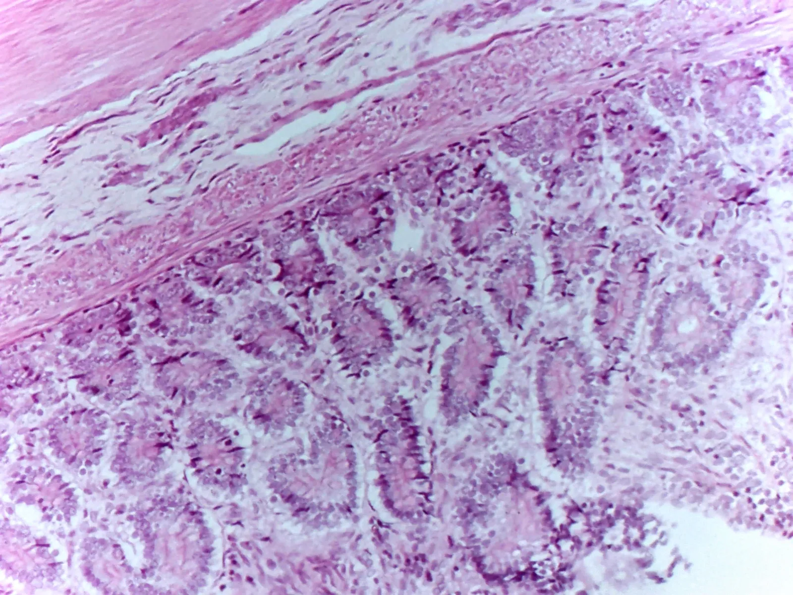
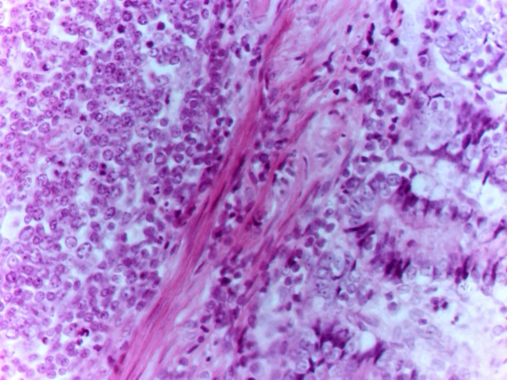
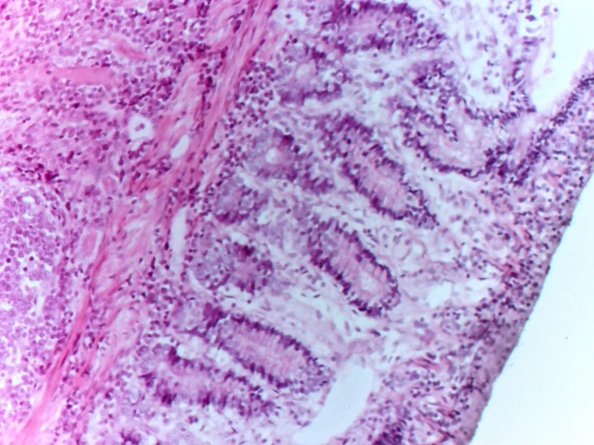

Lâmina 48 · Sistema digestório
Íleo



Toque na imagem para ampliar. No computador, use as setas do teclado para trocar de imagem.
Lâmina 48 · Sistema digestório



Toque na imagem para ampliar. No computador, use as setas do teclado para trocar de imagem.